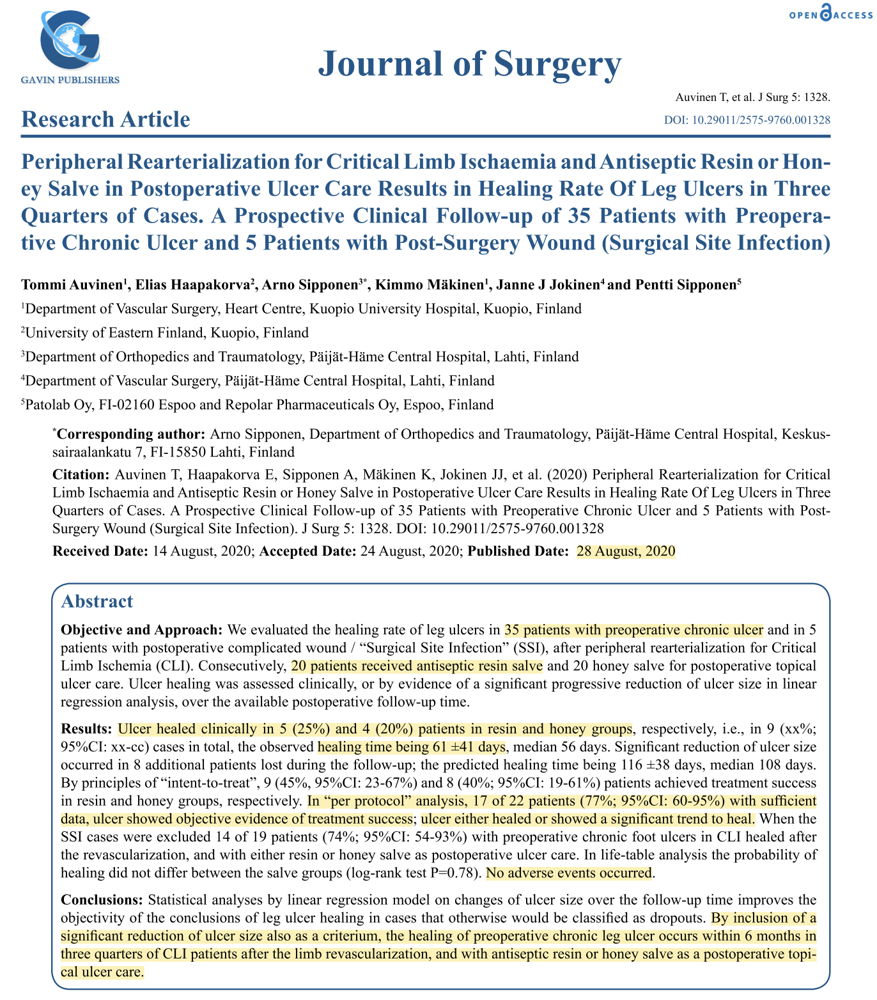

Clinical Study
A prospective 6-month study evaluated the healing rate of leg ulcers in 40 patients (35 with preoperative chronic ulcers and 5 with postoperative Surgical Site Infections) following peripheral rearterialization — surgical procedures to restore blood flow — for Critical Limb Ischaemia (CLI). Participants were randomized to receive either Abilar® 10% resin salve (n=20) or medical honey salve (n=20) for at-home topical care. Healing was assessed clinically or through linear regression analysis of progressive wound size reduction during scheduled follow-up visits.
Key Findings
In the "per protocol" analysis of patients with sufficient data, 77% (17 of 22) achieved treatment success, showing objective evidence of either complete healing or a significant trend toward healing. When excluding surgical site infections, 74% of preoperative chronic foot ulcers healed following revascularization and the use of the antiseptic salves. The mean observed healing time for clinically closed ulcers was 61 ± 41 days.

Download
Download PDFReference
Auvinen T, Haapakorva E, Sipponen A, Mäkinen K, Jokinen JJ. Peripheral Rearterialization for Critical Limb Ischaemia and Antiseptic Resin or Honey Salve in Postoperative Ulcer Care Results in Healing Rate Of Leg Ulcers in Three Quarters of Cases. A Prospective Clinical Follow-up of 35 Patients with Preoperative Chronic Ulcer and 5 Patients with Post-Surgery Wound (Surgical Site Infection). Journal of Surgery. 2020;5:1328. doi:10.29011/2575-9760.001328
Back to study